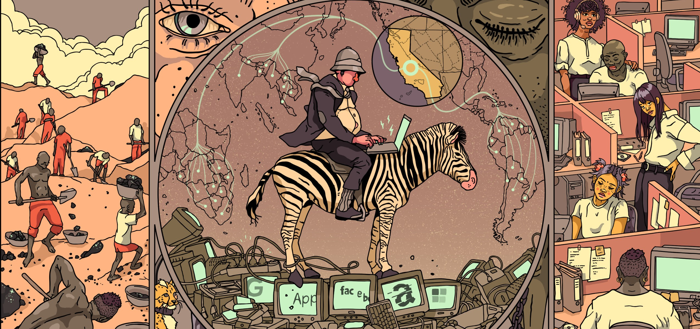
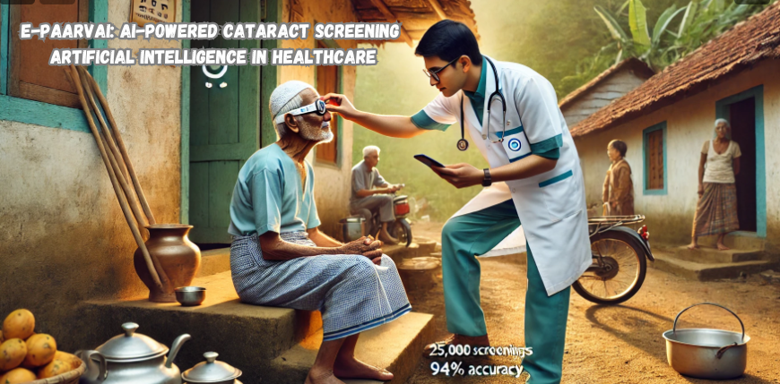
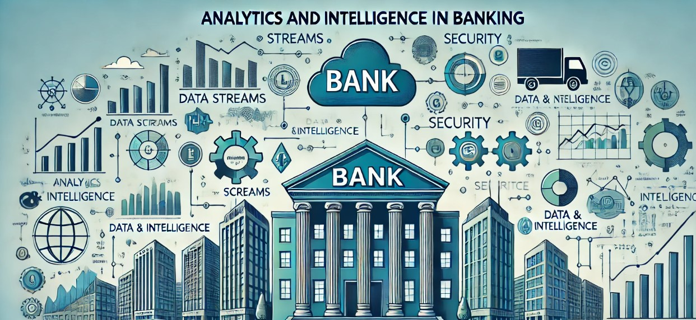

Strategic Research & Intelligence

This project, "Digital Colonization: Breaking Chains Through Responsible Innovation", critically examines how dominant tech corporations control digital infrastructure, data, and labor, mirroring historical colonialism. The study analyzes the monopolization of digital tools and the growing digital divide between advanced and less-developed regions, highlighting the exploitation of user data and labor. By shedding light on these modern power imbalances, the project emphasizes the far-reaching effects of corporate dominance on global economies, cultures, and political systems.
To counter digital colonialism, the project offers strategies focused on responsible innovation, including ethical data practices, open-source technologies, and digital literacy. These recommendations aim to foster a more decentralized digital environment that prioritizes transparency, fairness, and inclusivity. The project calls for a shift in digital governance, advocating for global collaboration to build a more equitable digital future.
Exploring opportunities for industrial innovation is key to regional growth. This project, conducted for the RHUL Centre of Excellence, provides a comprehensive feasibility study aimed at establishing a Centre for Emerging Industries (RHUL_CEI) in the Runnymede region. By evaluating regional entrepreneurial ecosystems, policy frameworks, and cross-sector collaboration, the project identifies key strategies to support the growth of emerging industries, such as cybersecurity, cleantech, and creative technologies.
The study uncovers the region's competitive advantages, including strong political support, a skilled workforce, and partnerships with institutions like Royal Holloway University and Brooklands College. However, challenges like skills shortages and high operating costs are addressed through recommendations for targeted training programs and financial support. The proposed RHUL_CEI services, including industry-focused events, tailored consultancy, and incubation programs, position the center as a driving force for innovation and entrepreneurship. This feasibility study provides a roadmap for fostering sustainable industrial growth in the Runnymede region while aligning with national economic goals.
Revitalizing a brand in a post-pandemic world requires strategic foresight. This project, a consultancy proposal for Peloton Interactive, Inc., addresses the critical challenges faced by the company as it navigates the shift from pandemic-driven growth to a more competitive fitness market. By focusing on brand revitalization, customer engagement, and financial stability, the project provides a strategic roadmap to help Peloton regain its market leadership and ensure long-term sustainability.
The proposal outlines key solutions, such as rebuilding brand trust through data-driven marketing, introducing tiered subscription models to enhance accessibility, and leveraging predictive analytics to personalize product offerings. It also includes strategies for financial recovery, emphasizing operational efficiency and new revenue streams. Through these initiatives, Peloton can reconnect with its core audience, diversify its offerings, and adapt to the evolving fitness landscape, positioning itself for sustained success in the post-pandemic era.

This project presents e-Paarvai, an innovative AI-powered mobile application developed to tackle the widespread issue of cataract-induced blindness in rural Tamil Nadu. Launched by the Tamil Nadu e-Governance Agency (TNeGA) and the Tamil Nadu State Blindness Control Society (TNSBCS), e-Paarvai leverages artificial intelligence to provide affordable and scalable cataract screening, particularly in regions with limited healthcare access. The project demonstrates how technology can be harnessed to solve critical healthcare challenges by enabling doorstep screenings through minimally trained volunteers, significantly improving accessibility.
The project’s success lies in the collaboration between AI technology and human oversight, with certified ophthalmologists verifying diagnoses to ensure accuracy. Through continuous testing and improvements, e-Paarvai achieved an AI accuracy of 94%, screening over 25,000 patients in 30 rural districts. The app’s widespread adoption and social impact earned it the NASSCOM AI Gamechangers Award, and it serves as a model for scaling AI-driven healthcare solutions. This project highlights the potential of AI in healthcare and the importance of collaboration and trust in achieving sustainable and impactful solutions.

Unlocking value in the banking sector through data-driven transformation. This project explores how Business Intelligence (BI) and Data Analytics are reshaping critical banking functions such as sales, marketing, and operations. By leveraging advanced analytics, banks can enhance customer engagement, improve operational efficiency, and strengthen risk management. The project delves into real-world case studies from leading banks and fintech companies to demonstrate how data analytics can drive smarter, more profitable decisions.
The analysis focuses on three key areas: improving customer-centric strategies to boost engagement, utilizing predictive analytics for fraud detection and risk management, and enhancing operational efficiency. Key findings highlight how banks like HSBC and Monzo have successfully integrated BI tools to improve fraud detection, streamline operations, and deliver personalized customer experiences. This project outlines a roadmap for banks to harness the power of analytics, creating a competitive advantage and driving value creation in an increasingly data-centric industry.

Leveraging the power of cloud technology to transform e-commerce. This project examines the strategic integration of Microsoft Azure into the operations of PuzzlePals, an e-commerce platform specializing in customizable puzzles. By utilizing Azure’s scalable infrastructure and advanced analytics, the project demonstrates how cloud solutions can boost operational efficiency, enhance security, and drive business growth.
The study highlights key areas of improvement, including enhanced scalability during peak periods, strengthened security protocols, and personalized customer experiences through data-driven insights. Additionally, Azure’s global reach ensures a seamless experience for international customers, supporting PuzzlePals’ global expansion efforts. This project outlines a roadmap for how cloud computing can revolutionize e-commerce, offering PuzzlePals the tools to remain competitive and innovative in the digital marketplace.